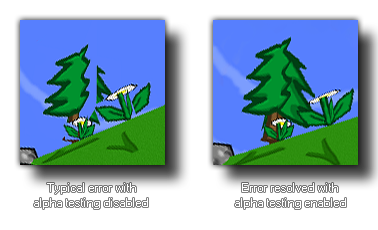

draw_set_alpha_test
Enable or disable alpha testing in your game.
Syntax:
draw_set_alpha_test(enable);
| Argument | Description |
|---|---|
| enable | Set to true or false to enable or disable alpha testing. |
Returns : N/A
Description
This function will enable or disable alpha testing for your game (by default this is disabled). By switching alpha testing on you can then use the companion function
draw_set_alpha_test_ref_value to set the "cut-off" value at which all alpha values will be set to 0. The image below shows the difference that can be seen when alpha testing is switched on or off:

NOTE: This function may negatively affect performance on iOS, Android and Windows Phone devices.
Example :
draw_set_alpha_test(true);
draw_set_alpha_test_ref_value(128);
The above code will switch on alpha testing and set the test threshold to 128 (only pixels with an alpha over 0.5 will be drawn).
Back : Drawing